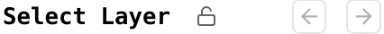

Usage and Features¶
Layers¶
Note that the layer menu can be locked by clicking the lock icon in the layer menu’s header. See screenshot below.
{kind=link}
Projection and Orientation¶
The default map projection is
EPSG:4326. Currently, the projection cannot be changed but there are
plans for this to be configurable. The external baselayers
from Legacy Survey are reprojected by
OpenLayers
from
EPSG:3857
to
EPSG:4326.
The orientation of the layers is defaulted to
360
< ra
<
0
to allow seamless comparisons between the Simons Observatory
maps and the included comparison maps. However, the toggle
switch at the top left can orient the layers to
-180
< ra
<
180
when preferred. Note that the comparison maps are disabled
when oriented to
-180
< ra
<
180.
Baselayers¶
These are maps that are served from your tile server or, in
the case of the
Comparison
maps
section, from an external tile server.
Baselayer history is tracked similarly to how web browsers
track history. The left and right arrows in the layer menu’s
header (see image above) can be used to switch baselayers
according to the history stack. Alternatively, one can use
the keyboard to enter
H
to go back and
L
to go forward.
Highlight Regions¶
When present in the database, a section will be rendered in the layer menu for highlight regions. These regions can be toggled on/off via checkboxes. The regions are rendered as simple rectangular overlays. When hovered over, information will be displayed and a user can open a menu in order to download a cutout of the active baselayer within the region’s boundary.
Source Catalogs¶
When present in the database, a section will be rendered in the layer menu for source catalogs. These catalogs can be toggled on/off via checkboxes. Each source in a catalog is rendered as a marker that can be clicked on to reveal its data.
External Searches¶
Users can search SIMBAD or explore in Legacy Survey an area of interest. The SIMBAD search is performed with a radius of 5 arcmin from the clicked position. The Legacy Survey instance will open and be marked at the clicked position.
This feature can be surfaced as follows:
-
Hold the
Altbutton and click anywhere on the map. A marker with a popup will appear. -
Click the desired search link(s). Note that links open in a new tab.
Download Cutouts¶
Regions of a map’s active baselayer, with the exception of any
“comparison map” baselayers, can be downloaded as
.fits,
.png,
.jpg, or
webp
files by doing the following:
-
Either toggle on the region in the layer menu or click the crop icon in the top left to draw a region of interest
Hover over the region of interest
-
Click the hamburger menu button to show the download options, and select the desired file type
Histogram Controls¶
Defined Parameters¶
Some of the color map settings used in the histogram and
baselayers are derived from
matplotlib. The tile server responds to the following
matplotlib
parameters:
-
vminandvmax-
These are the min and max values shown in the inequality display
-
-
cmap-
This corresponds to the selected color map, which defaults to
RdBu_r.
-
Additionally, the tile server responds to the following boolean values:
-
log-
Determines whether or not a log transform is applied.
-
-
abs-
Determines whether or not an absolute value transform is applied. Note that the transform essentially folds negative values into positive values rather than filtering away negative values.
-
Changing Parameters¶
With the Dialog¶
Clicking the button with the diagonal arrow opens a dialog box that allows users to adjust any and all parameters.
Changing vmin and vmax¶
There are a number of ways to change
vmin
and
vmax, either individually, simultaneously, or precisely.
Individually¶
Use the slider’s drag handles to change
vmin
or
vmax.
Simultaneously¶
Users have two options to maintain the difference
between
vmin
and
vmax.
-
Option 1: Drag the blue bar between the slider’s drag handlers left or right.
-
Option 2: Use
WandDas described in the keyboard shortcuts table.
Precisely¶
Users can precisely set
vmin
and
vmax
as follows:
-
Click either the
vminorvmaxvalue shown in the histogram display -
Enter
vminandvmaxvalues into the inputs that appear Press enter to set these values
Alternatively, use the dialog box to precisely set
vmin
and
vmax.
Changing
cmap¶
Users can use the dropdown selector to choose between one
of the built-in options. If a different
cmap
value compatible with
matplotlib
is desired, use the dialog box and enter its value in the
color map field.